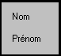
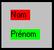
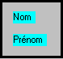

La plupart des attributs d'affichage (polices, couleurs, textes, bulles, etc.) des objets placés dans les masques peuvent être modifiés dynamiquement par programme. Il est également possible d'influer sur la visibilité d'un objet :
- Le griser.
- Le rendre illisible.
- Le masquer (on dit aussi cacher).
Méthode
Pour modifier un attribut, le programme doit savoir désigner le ou les objet(s) concerné(s). Pour cela, vous devez affecter à chaque objet concerné un ou plusieurs noms qui serviront à identifier l'objet. Il est tout à fait possible de donner le même nom à plusieurs objets (cela permet de modifier les attributs d'une famille d'objets en une seule opération) et un objet peut avoir plusieurs noms (ce qui lui permet d'appartenir à plusieurs familles d'objets).
Saisie
Ces noms sont à renseigner dans la propriété Noms de l'objet de la famille Présentation.
Si un objet porte plusieurs noms, séparer-les par une virgule (,) ou un point-virgule (;).
Programmation
Pour les détails complets sur la programmation des attributs dynamiques, appelez l'aide de XmeSetAttribut / XmeResetAttribut, XmeListSetAttribut / XmeListResetAttribut.
Exemple
Soit les deux objets texte suivants :

Le premier objet a pour noms : nom et tous
Le deuxième objet a pour noms : prenom et tous.
Nous modifions les couleurs de fond de chaque objet séparément par :
XmeSetAttribut("nom",AN_COULEUR_FOND,"rouge")
XmeSetAttribut("prenom",AN_COULEUR_FOND,"vert")
pour obtenir :

Nous voulons maintenant affecter la même couleur de fond aux deux objets. Comme ils ont un nom commun (tous), cette opération peut se faire en une instruction :
XmeSetAttribut("tous",AN_COULEUR_FOND,"bleuciel")
et nous obtenons :
